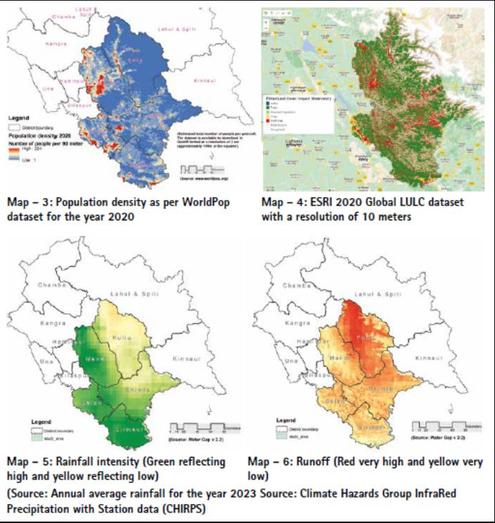
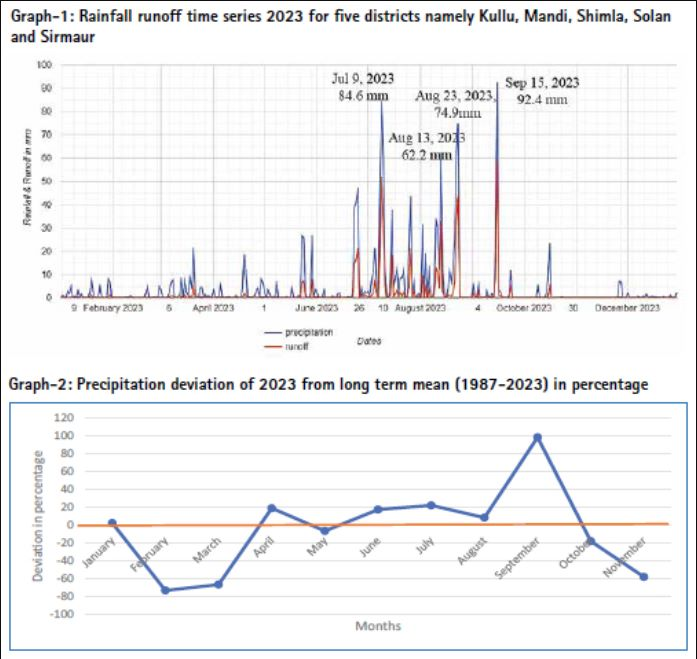
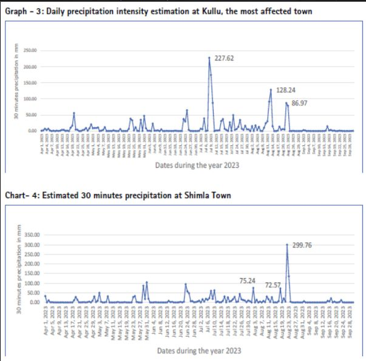

During the year 2023, Himachal Pradesh bore the brunt of natural calamities, with staggering statistics reflecting its severity. Himachal Pradesh suffered losses to the tune of Rs 9,905.77 crore due to heavy rains during monsoon in 2023. As per https://environicsindia.in/ “Extreme events such as flash floods and cloudbursts and associated landslides, subsidence and sinking of land and complete failure of populated hill slopes devastated lives across the State. Estimates suggest 404 people lost their lives, 377 have been injured in the various events across the State. Besides this huge loss of human lives. Over 10,000 livestock perished, and 5,644 cowsheds too were destroyed. Damages to buildings have been significant with 2546 houses and 317 shops completely damaged and 10853 houses partially damaged leaving a large population to seek alternate places to liveˮ. The aftermath of this disaster saw over 1,000 roads rendered impassable due to downed power lines and extensive infrastructure damage. Notably, around 70,000 tourists were evacuated from the affected areas, as confirmed by the Hon’ble Chief Minister, Himachal Pradesh, Sh. Sukhvinder Singh Sukhu. The rescue operations, spearheaded by the Indian army and the National/State Disaster Response Force, underscored the gravity of the situation. Numerous districts endured a deluge that equated to a month’s worth of rainfall within a single day. The overflowing rivers exacerbated the situation, causing floods and landslides that obliterated vehicles, bridges, roads, and disrupted power and electricity supply.
The landslides inflicted further havoc, washing out key transportation arteries such as the Himalayan Expressway and sections of the Kalka–Shimla Railway. In Shimla region, the additional floods and landslides claimed the lives of 71 individuals. Notably, a massive landslide in Shimla decimated roads and structures, adding to the city’s woes.
Three intense spells of extreme weather occurred between July 8th to 11th, August 14th to 15th, and August 22nd to 23rd, resulting in significant impact, with 163 identified landslides and 72 flash floods. As per the Himachal Meteorological Department, the state received 224.1 mm of rainfall during five days between July 8 and July 12 against 2023 its normal rainfall of 42.2 mm, a deviation of 431% from average rainfall, which was the highest since 1980. Among the severely affected regions were Kullu, Mandi, Shimla, Sirmaur, Solan, and Chamba districts of Himachal Pradesh. Considering the districts most severely impacted, the study area for the current analysis has been narrowed down to five districts: Kullu, Mandi, Shimla, Sirmaur, and Solan.
Mapping rainfall-based flash floods in mountainous regions poses significant challenges due to the intricate terrain and dynamic weather patterns. Many satellites operate on a five-day revisit cycle, which often proves insufficient for capturing flash flood events in mountainous areas. The rugged topography of mountains accelerates rainfall accumulation, fostering unpredictable runoff and erosion dynamics. Moreover, steep slopes and narrow valleys exacerbate rainfall intensity, complicating precise predictions of flash flood occurrences. Furthermore, restricted access to remote regions and sparse monitoring infrastructure impede endeavours to effectively map and forecast flash floods in mountainous terrain.
The Map-5 suggests that while the normal rainfall pattern in areas more affected by disaster is slightly lower compared to the higher rainfall areas of the Kangra region, runoff appears to be the decisive factor in triggering flash floods in Kullu valley (see Map 5 & 6). The relationship between rainfall patterns and runoff appears strong, underscoring the importance of variables like rainfall intensity, slope, and elevation in flood-induced disasters. Graph-1 further illustrates this robust correlation between rainfall and runoff.
July 9th 2023 recorded 84.6 mm of precipitation cumulatively in five districts, followed by three more peaks that played havoc to the region and posed risks to life and property (see Graph-1).
The average monthly rainfall for each month from 1987 to 2023 was calculated by summing up the rainfall for that month across all years and dividing it by the total number of years. Then, the percentage deviation for each month in 2023 was computed by comparing its rainfall with the respective average. Notably, rainfall decreased in February and March of 2023, while September 2023 saw a 100 percent positive deviation. On the whole, the monsoon rainfall showed an increase in 2023. Further intensity of rainfall also increased significantly.
It appears that the 30-minute rainfall indicates a notably high intensity of rainfall in August 2023, leading to rapid runoff and flash flooding along the rivers and khads (see Graph – 3). It is noteworthy that human settlements in Himachal Pradesh are predominantly located along the valley, and this trend is steadily consolidating each year, contributing to an escalation in population density (see Map – 3). The rainfall intensity is plotted graphically for Kullu and Shimla separately, visualised at Graphs – 3 & 4)
The Graph -4 of Shimla illustrates the estimated 30-minute precipitation, computed using Google Earth Engine. This notable peak in precipitation occurred during August 2023 and led to significant losses due to numerous landslides and landslips.
Precipitation data for Kullu town is derived from the Global Precipitation Measurement (GPM) initiative. GPM is an international satellite mission designed to offer advanced observations of rain and snow across the globe every three hours. The Integrated Multi- Satellite Retrievals for GPM (IMERG) serves as the unified algorithm for estimating rainfall, amalgamating data from all passive-microwave instruments within the GPM Constellation.
This algorithm aims to intercalibrate, merge, and interpolate satellite microwave precipitation estimates alongside microwave-calibrated infrared (IR) satellite data, precipitation gauge analyses, and potentially other precipitation estimators. It operates multiple times for each observation period, initially providing a preliminary estimate and subsequently refining its estimates with incoming data. The final iteration incorporates monthly gauge data to produce research-grade products.
However, it is noteworthy that a single SENTINEL-1 satellite has a revisit time of once every 12 days, and the twosatellite constellation offers a 6-day exact repeat cycle, rendering it unsuitable for assessing instantaneous events such as flash floods. Additionally, each scene of Sentinel-1 provides varying resolutions (10, 25, or 40 meters).
Google Earth Engine was employed to generate a flood extent map using SAR Sentinel-1 imagery, employing a change detection methodology comparing preand post-flood event images. Specifically, Sentinel-1 GRD (Ground Range Detected) imagery was utilized, which undergoes pre-processing steps including Thermal- Noise Removal, Radiometric calibration, and Terrain-correction, followed by the application of a Speckle filter.
The flood extent mapping was derived from the United Nations Platform for Space-based Information for Disaster Management and Emergency Response (UN-SPIDER). The study area encompassed five districts within the State of Himachal Pradesh, chosen due to flood-related disasters observed in 2023. However, due to the mountainous terrain and narrow rivers, coupled with flash flood-prone valleys, accurately depicting inundated areas proved challenging. Moreover, the classification of snow-covered regions as flood-affected areas further complicates the analysis. Consequently, the utility of Sentinel-1 GRD imagery for this purpose appears limited. However, two maps have been generated using Google Earth Engine (GEE): one illustrating all flood extents recorded between July and September 2023, as depicted in Map 8, while Map 9 specifically highlights areas that experienced severe inundation, resulting in significant loss of life and property during the same period last year.

Runoff, the result of precipitation flowing over the ground surface, has the potential to trigger flash floods by accumulating rapidly, overwhelming natural or manmade drainage systems. Increased runoff, often prompted by heavy rainfall or rapid snowmelt, can elevate water levels in streams, rivers, and urban areas, precipitating flash floods with minimal warning. Consequently, there exists a direct correlation between runoff and the occurrence of flash floods, with heightened runoff levels amplifying both the risk and severity of flash flood events.
In regions like Kullu & Manali, characterized by steep slopes and narrow valleys, excessive runoff swiftly accumulate, precipitating flash flooding events that endanger human life, infrastructure, and the environment. It is imperative to implement effective runoff management strategies, including enhanced land-use planning, watershed management initiatives, and the establishment of early warning systems, to mitigate the adverse impact of flash floods in Kullu and other susceptible areas.
The study area encompasses diverse topographic features, ranging from plains to highly mountainous terrain. Despite the relatively low rainfall in the area, Kullu valley experienced significant property loss due to intense runoff from higher elevations. The unprecedented rainfall intensity resulted in widespread devastation and havoc throughout the valley. Continuous rainfall triggered intermittent landslides in various parts of the Study area, leading to substantial loss of human life, livestock, and property. Additionally, numerous landslips and landslides occurred in different locations during the last monsoon season.
The State Government has been diligently working to restore normalcy as swiftly as possible. Himachal Pradesh has a resilient history of rebounding from such disasters repeatedly over the years. Significant resources have been mobilized, resulting in the saving of numerous lives. However, these events offer valuable lessons for both the populace and the administration, fostering ongoing learning and adaptation.